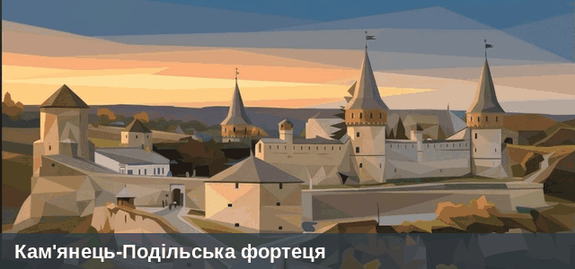
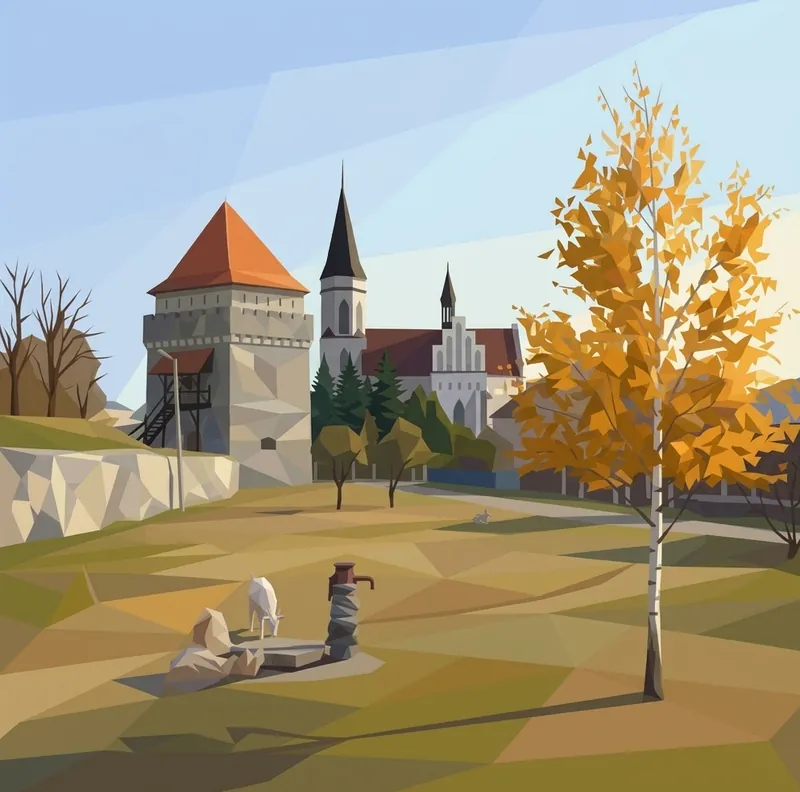
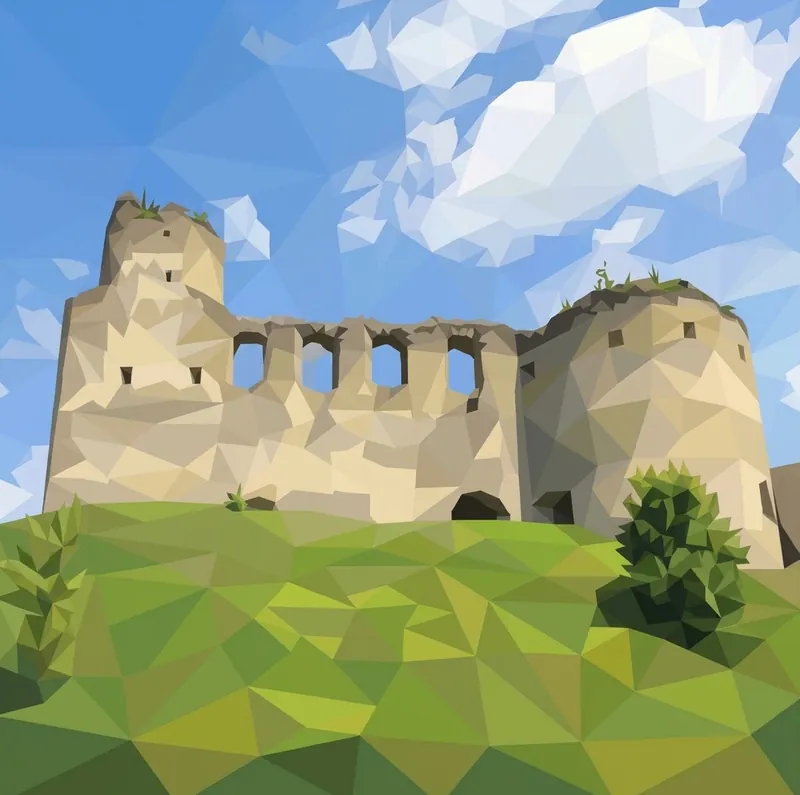

Оборонні споруди Поділля
Поділля — історичний край у басейні Південного Бугу та лівих приток Дністра. Через нього століттями проходили торговельні шляхи й лінії воєнних походів, тому міста краю обростали мурами, вежами та замками. Найчастіше їх будували на природно захищених місцях: скелястих мисах, у вигинах річкових каньйонів, на злитті річок.
Сайт знайомить відвідувачів із найвідомішими пам'ятками оборонної архітектури Поділля. Усі ілюстрації виконано в єдиному полігональному стилі (low-poly), що підкреслює кам'яну фактуру мурів.

Кам'янець-Подільський
Фортеця на скелястому мисі над каньйоном Смотрича — символ Поділля.

Вежі старого міста
Оборонні вежі, що захищали міські квартали та в'їзди.

В'їзди та мости
Мости й брами — найуразливіші місця будь-якої фортеці.

Руїни замків
Залишки замків, які зберегли первісні мури й вежі.